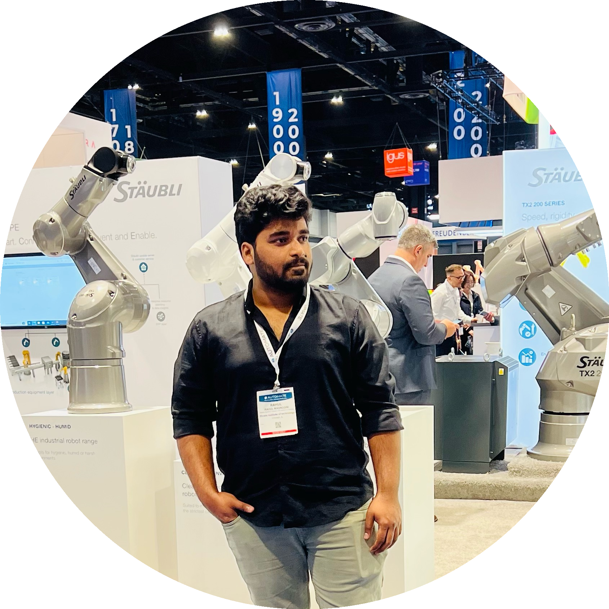

I am a Robotics and Mechatronics Engineer with an M.S. in Robotics from the University at Buffalo and a B.Tech in Mechatronics Engineering from SRM University. My work focuses on autonomous robotics, computer vision, motion planning, SLAM, perception, and machine learning. I have hands-on project experience using Python, C++, ROS, OpenCV, PyTorch, Gazebo, and MATLAB to develop and evaluate intelligent robotic systems.

Selected projects in robotics, autonomous navigation, computer vision, reinforcement learning, and machine learning.
Developed a multi-agent reinforcement learning system for autonomous coverage using 20 agents in a 20×20 environment. Trained the agents using TRPO for approximately one million simulation steps and achieved approximately 94% evaluation coverage.
Python • Reinforcement Learning • TRPO • Multi-Agent Systems
Contributing to a computer vision pipeline that converts 2D architectural blueprints into structured 3D building models. The workflow combines object detection, OCR, geometric processing, room-boundary analysis, and 3D model generation for walls, doors, and windows.
Python • YOLO • OCR • Computer Vision • 3D Reconstruction
Implemented autonomous navigation and motion-planning algorithms including Bug2, RRT, and Hybrid A*. Developed collision-aware planning and navigation workflows using ROS and Gazebo for simulated mobile robots.
ROS • Python • Gazebo • RRT • Hybrid A* • Motion Planning
Developed a stereo visual odometry pipeline using OpenCV for feature detection, feature matching, motion estimation, and robot trajectory reconstruction from stereo image sequences.
Python • OpenCV • Computer Vision • Visual Odometry
Developed a CNN-based image colorization model for converting grayscale images into realistic color outputs. Implemented the training pipeline in PyTorch using Tiny ImageNet and evaluated performance using MSE, SSIM, and PSNR.
Python • PyTorch • CNN • Deep Learning • Computer Vision
Processed LiDAR and mapping data to generate point clouds and convert environmental information into 2D cost maps for autonomous robot navigation and obstacle-aware planning.
ROS • SLAM • LiDAR • Point Clouds • Autonomous Navigation
Developed an IoT-based agricultural monitoring system integrating environmental sensors, embedded hardware, and an Adafruit dashboard. The system also incorporated image-processing-based rodent detection.
IoT • Embedded Systems • Sensors • Image Processing
Developed an energy-aware autonomous path-planning approach using Hybrid A* to generate feasible trajectories while considering travel time, vehicle constraints, and energy consumption.
Python • Hybrid A* • Optimization • Path Planning
I'm interested in opportunities in robotics software, autonomous systems, perception, and related robotics engineering roles. Feel free to connect with me.
Email: rahulmasagoni@gmail.com